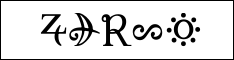
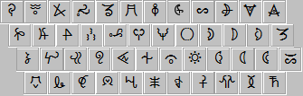

|
表意幻字（幼字）
アルバザード国はもともと幼字という表意文字を使っていました。神々が作った古い文字です。
表音文字の幻字を使う現在でも、一部の幼字は暦や季節などに用いられています。
幼字について詳しく知りたい場合は表意幻字（幼字）、天秤詞、幼字の字源をご覧ください。
ここでは幼字のフォントをダウンロードできます。ASCIIコードのアルファベット部分を潰して作られています。
幼字は日付の表示のほかに、(笑)などの天秤詞としても使うため、漫画などでよく用います。
WordやPhotoshopのようにアプリケーション内で複数のフォントを使えれば、幻字のkardinalなどと併用できます。
幼字は2011年まで手書きのような粗いフォントしかありませんでしたが、nias氏のご厚意により、流麗なサンセリフとセリフの標準書体が誕生しました。大変ありがたいことです。
バナーをクリックするとフォントをダウンロードできます。実はこのバナーは文章になっています。古アルカの文そのものではありませんが、古アルカと幼字の発想に慣れた相手には伝わるようになっています。
●ayaka
概要：アヤカ（朝顔の古名）。幼字の原型。標準サンセリフ。線幅一定。Helveticaに相当
可読性：良
用途：幼字本来の形を伝える際に用いる
●yuuko

概要：ユウコ（曼珠沙華の古名）。alblantを元に作った標準セリフ。Times New Romanに相当
可読性：良
用途：本文中の幼字として用いる
●文字対応表
地球のキーボードと、arkantisの対応表を下記に挙げておきます。
上の行が小文字で、下の行が大文字になります。また、左の列がお手元のキーボードで、右の列がarkantisです。
注：海外の方は日本語のキーボードを使うか、キーボードの設定を日本語にしてスクリーンキーボードをお使いください。
・シフトキー押さず


・シフトキー押す

|